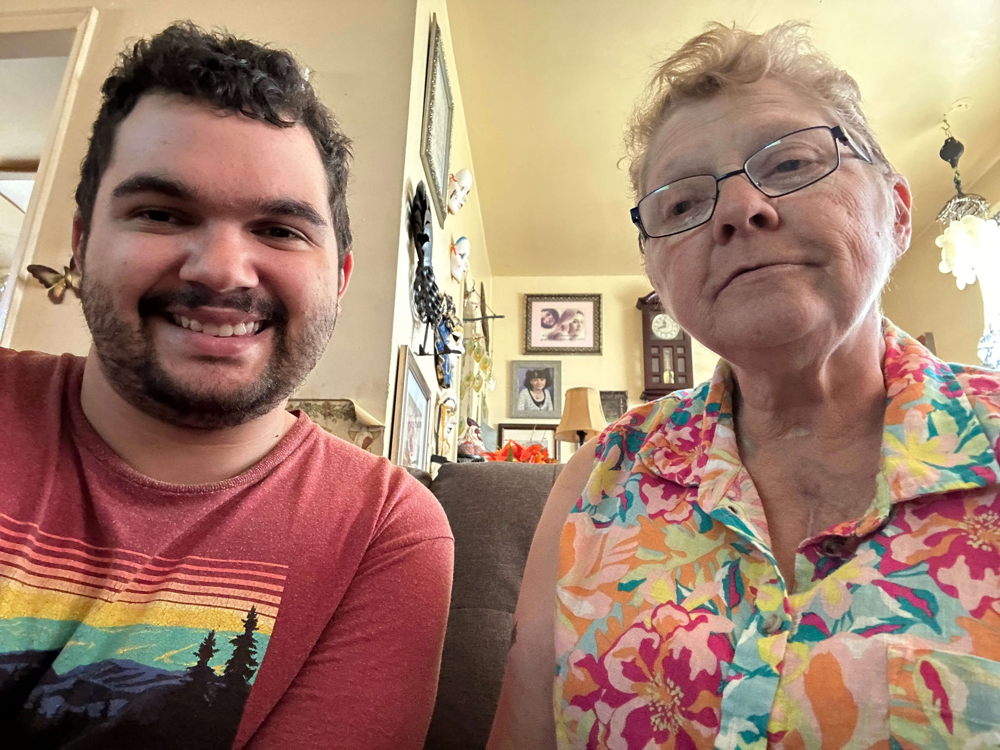
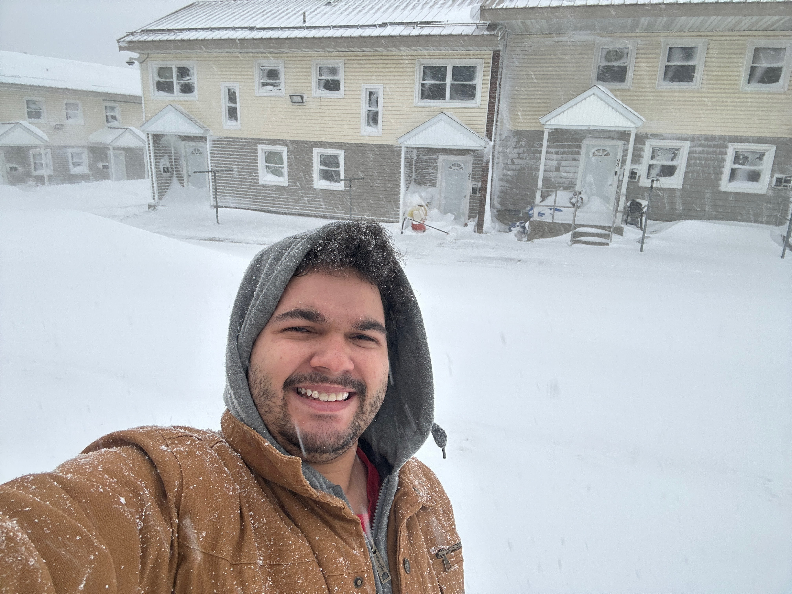
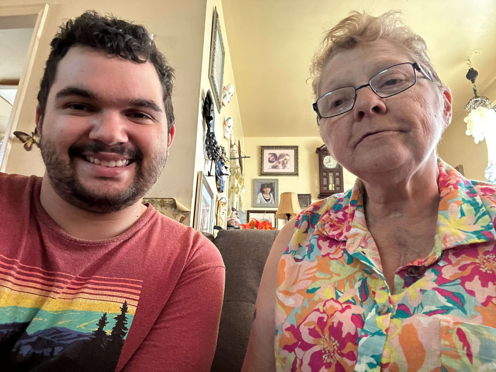
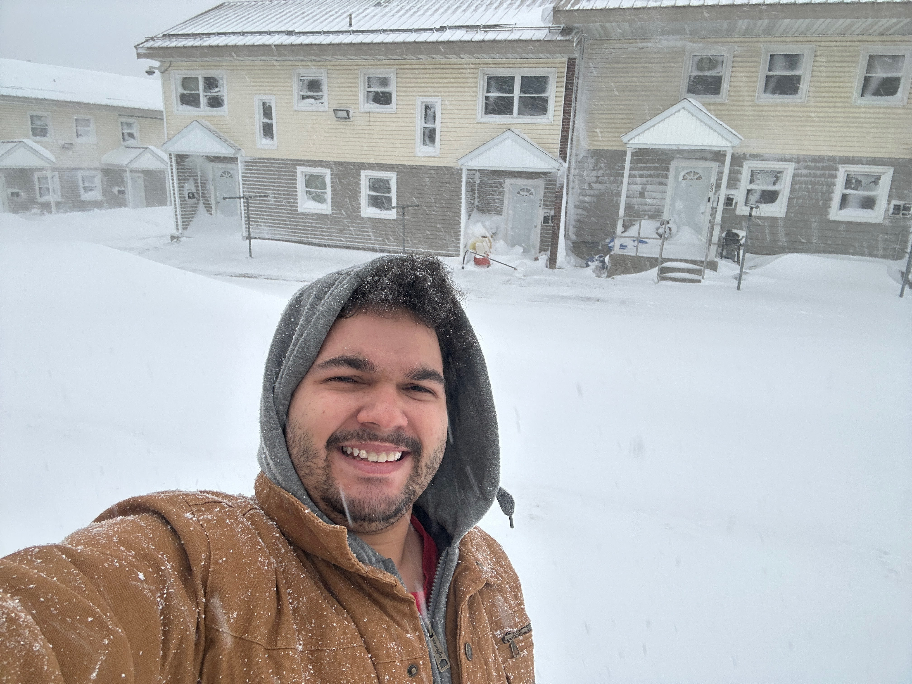

Contact Me
About Me
 



Welcome to my webpage! My name is Justyce Countryman, I am a recent graduate of SUNY Oswego with a Computer Science B.A.
degree and a minor in Mathematics. Outside of my studies, I'm passionate about spending quality time with my
grandma, transforming my room into a dream man cave, and staying updated on
severe weather patterns (I was initally planning to study meteorology).
I thrive on conquering academic challenges both independently and through team environments, either of which will
utilize and upgrade my problem-solving abilities.
One of my key approaches to tackling complex tasks involves a standard cycle of
understanding the problem, devising a strategic plan, implementing solutions, and
iteratively refining the solution until the optimal outcome is accomplished. This process, honed through
numerous academic and real-world endeavors, defines my commitment to exceptional success in virtually any field of study.
My final semester at SUNY Oswego yielded the most rewarding experience for my academic background. I worked with a
group of four other fellow teammates on a substantial software engineering project that would be used by multiple university departments, and even
the NASA Goddard Space Flight Center. On top of that project, I also single-handedly developed an application that takes advantage of the beneficial capabilities of
image processing. This goal was accomplished by implementing several preprocessing methods that aim to improve the readability and clarity of text document images consisting of several different forms of background noise (Noise example: Spilling coffee on a document).
Moreover, I worked on three projects concerning natural language processing, all of which involved training syntax datasets so that computers can be taught the art of linguistics.
Now that I have graduated, my new projects and skills will come from self-interests, curiosity, and careers. I look forward to leveraging my diverse skill set and
positive attitude to contribute meaningfully to future projects and initiatives.
Courses Completed
When available, you may click on the links to view my GitHub repositories for each course.
Computer Science
SUNY Jefferson (1st and 2nd Year)
- NET 100 - Networking Fundamentals
- CIS 111 - Operating System Environments
- CIS 116 - Introductory Programming
- CIS 212 - Analysis and Logical Design
- CIS 216 - Advanced Programming
- CIS 221 - Computer Architecture
- CIS 225 - Assembly Language
- CIS 250 - Data Structures
SUNY Oswego (3rd and 4th Year)
- CSC 221 - Foundations of Computer Science
- ISC 300 - Ethics and Social Policy in the Digital Age
- CSC 320 - Numerical Methods
- CSC 322 - Systems Programming
- CSC 333 - Privacy/Security/Cryptography
- CSC 344 - Programming Languages
- CSC 350 - Computational Linguistics
- CSC 365 - Data Structures and Algorithms
- CSC 366 - Computational Models of Cognitive Processes
- CSC 375 - Parallel Programming
- CSC 380 - Software Engineering
- CSC 470 - Computer Graphics
- CSC 474 - Image Processing
Mathematics
SUNY Jefferson (High School, 1st, and 2nd Year)
- MTH 185 - Precalculus
- MTH 221 - Calculus 1
- MTH 222 - Calculus 2
- MTH 241 - Calculus 3
- MTH 242 - Differential Equations
SUNY Oswego (3rd and 4th Year)
- MAT 215 - Introduction to Discrete Mathematics
- MAT 230 - Matrix Algebra
- MAT 318 - Statistics in the Sciences
- MAT 373 - Number Theory
Other Courses
SUNY Jefferson (High School, 1st, and 2nd Year)
- ENG 101 - Research and Composition
- ENG 102 - Literature and Composition
- SPA 221 - Intermediate Spanish 1
- SPA 222 - Intermediate Spanish 2
- SOC 144 - Introduction to Sociology
- PED 180 - Wellness
- PED 184 - Power Walking
- HIS 151 - American History 1877 to Present
- INT 250 - Honors Seminar
- PHY 143 - Science and Engineering Physics 1
- STA 151 - Public Speaking
- STA 161 - Interpersonal Communication
- GEO 110 - Earth Sciences
SUNY Oswego (3rd and 4th Year)
- CHE 111 - General Chemistry I
- CHE 212 - General Chemistry II
- GST 308 - Peer Tutor Training
Projects
- Gravity Waves Analysis Tool (January 2024 to Current) - This was my team-based, semester-long project for CSC 380 - Software Engineering at SUNY Oswego. This project is a very benefical and easy-to-use web application designed for individuals eager to conduct research on radiosonde weather balloon files in order to detect possible gravity waves. The user simply provides a text file containing weather balloon data, and the application will display a downloadable PDF containing several graphs, two hodographs, a path of the weather balloon, and if possible, additional parameters like energy, wavelength, intrinsic frequency, and many others. Other than the weather balloon path, the PDF will display information for both the stratosphere and troposphere. The motivation for this project was primarily driven by the 2024 Solar Eclipse. I worked on this project with four other teammates and I am very proud of what was created as a result. This project is still in progress because we are testing for any potential bugs. If you are interested in meteorology, physics, or atmospheric science, or simply want to learn more about gravity waves and weather balloon data analysis, you are welcome to check out the project's GitHub repository.
- Text Document Enhancer (January 2024 to May 2024) - This was my semester-long project for CSC 474 - Image Processing at SUNY Oswego. The problem I wanted to solve was looking for ways to remove noisy backgrounds (coffee stains, crumples, folding creases, etc.) from text documents. The final result was an application containing nine subprograms. Eight of these subprograms involve user-adjustable image preprocessing methods, while the last one automatically attempts to enhance the image without any parameters. This project primarily uses two libraries, OpenCV, for image preprocessing, and PyTesseract, for text extraction. With these tools and a lot of image dataset experimentation, I developed an application that handles the general types of background noise. The project also tries to ensure that any preprocessed text document images are both user-readable and computer-readable, but keep in mind that there is no "one-size-fits-all" solution to image processing.
- Natural Language Processing (NLP) (February 2024 to May 2024) - In my CSC 350 - Computational Linguistics course, I took on three different projects to train extremely large syntax datasets so that the computer can try to strive for gold-standards. These projects include predicting labels, part-of-speech tag sequences, and semantic interpretations. Each project considered several NLP algorithms and were applied through the usage of multiple Python libraries to examine which algorithms provide the highest accuracies. Unfortunately, at the request of my CSC 350 professor, I cannot share any of my code used in the projects.
- Disco Dance Floor Screensaver (November 2023 to December 2023) - This project was done as my final homework submission for the CSC 470 - Computer Graphics course at SUNY Oswego. This WebGL project was based on a personal passion for lights and disco. As a result, I created a disco dance floor screensaver. This project needed three WebGL subprograms, one for the color-changing tiles, one for the hanging and rotating 3D disco ball, and one for the starry-night background. Aligning the project to fully fit the web browser required additional HTML and CSS adjustments.
- The above projects best show my current programming, problem-solving, and creative capabilities. However, I have done many more memorable projects in prior courses. Click on any of my course GitHub repository links to see more of my techincal potential. Some of my other meaningful accomplishes include creating a text-based adventure game, a cache simulator, and a mini-shell in C (CSC 322), implementing and upgrading a Wikipedia website recommendation system (CSC 365), combining genetic algorithms with Java concurrency (CSC 375), and documenting my entire process with finding vulenerabilities on a mock computer system and recommending potential solutions (CSC 333).
Research
My research is demonstrated through the usage of posters, powerpoints/keynotes, and reports. You may access any of the supporting documents for the following research presentations from this GitHub repository.
- Computer Threats: What are they, What can they do, and How to Reduce Vulnerabilities
- Tropical Meteorology: How to Protect the World from Mother Nature's Fury
- Tropical Meteorology Vs. Infrastructure
- Follow-up Analysis of Black River Clean-up
- The Benefits and Real-World Applications of the Java Programming Language
- Why Learn Low-Level Programming Languages?
- Text Document Enhancement with Image Processing
- Gravity Waves Analysis Tool
Programming Languages
I would like to share the programming languages I currently feel confident with. As mentioned before, I absolutely appreciate the theoretical and application sides of computer science, so I can learn the syntax of programming languages very quickly. Please note I am only including programming languages in which I have made at least one meaningful program.
Confidence Legend:
: An expert in the programming language. All fundamentals are mastered and can be rapidly applied to any and all programs, even those of high complexity.
: Strong proficiency in the programming language. Skilled in most to all fundamentals, but may need time to comprehend and appreciate advanced projects.
: Intermediately proficient in the programming language. Most to all fundamentals are understood, but may need more practice before working on large or complicated programs.
: A beginner in the programming language. Some fundamentals are understood, but need to continue with learning the language and applying problem-solving skills.
: Java and Python
: HTML, CSS, JavaScript, WebGL, C, Prolog, LaTeX, and Assembly
: R, C++, Lisp, and Haskell
: MatLab
Software
Lastly, I want to list a handful of advantageous software tools that I am comfortable with at this time. Just like with programming languages, one of my strongest skills is learning software in a timely fashion, which includes applying them to real-world situations. Therefore, I am obviously not limited to these tools.
- Microsoft 365
- Google Workspace
- Programming IDEs (NetBeans, PyCharm, CLion, and Visual Studio Code)
- diagrams.net
- Jupyter Notebook
- Communication Software (Discord and Zoom)
- Docker
- Vernier Spectral & Graphical Analysis
- Adobe Scanner
- FileZilla
- Wireshark
- VirtualBox
In terms of operating systems, I have engaged with a lot of Windows and MacOS features. I also have some Linux experience, but because it has been quite a while since I last used Linux, I will need to refresh on its key capabilities.
Thanks for Reading!
If you would like to know more about my background, I invite you to take a look at my LinkedIn and GitHub profiles along with my Resume and CV. If you would like to reach out to me, I respond fairly quickly through LinkedIn and email. If necessary, phone calling and texting are also possible. I will update this webpage whenever any significant academic or career opportunities present themselves.